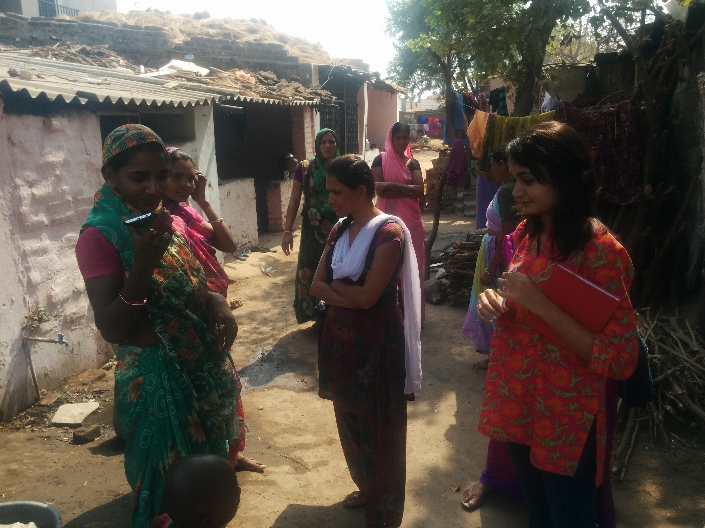
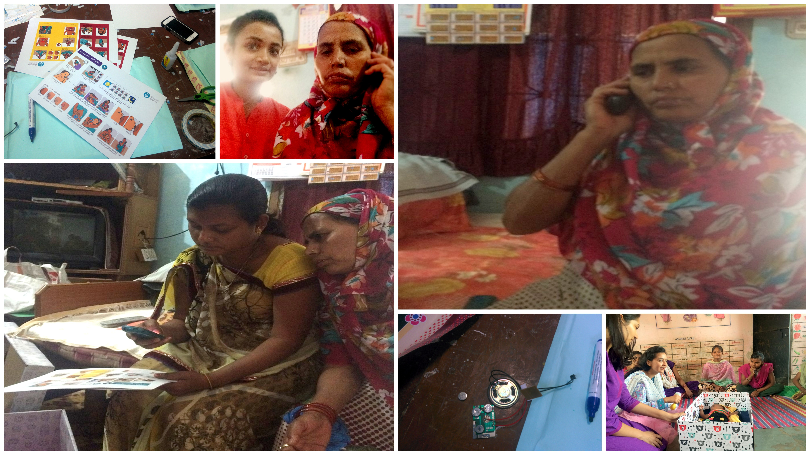
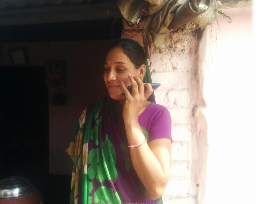
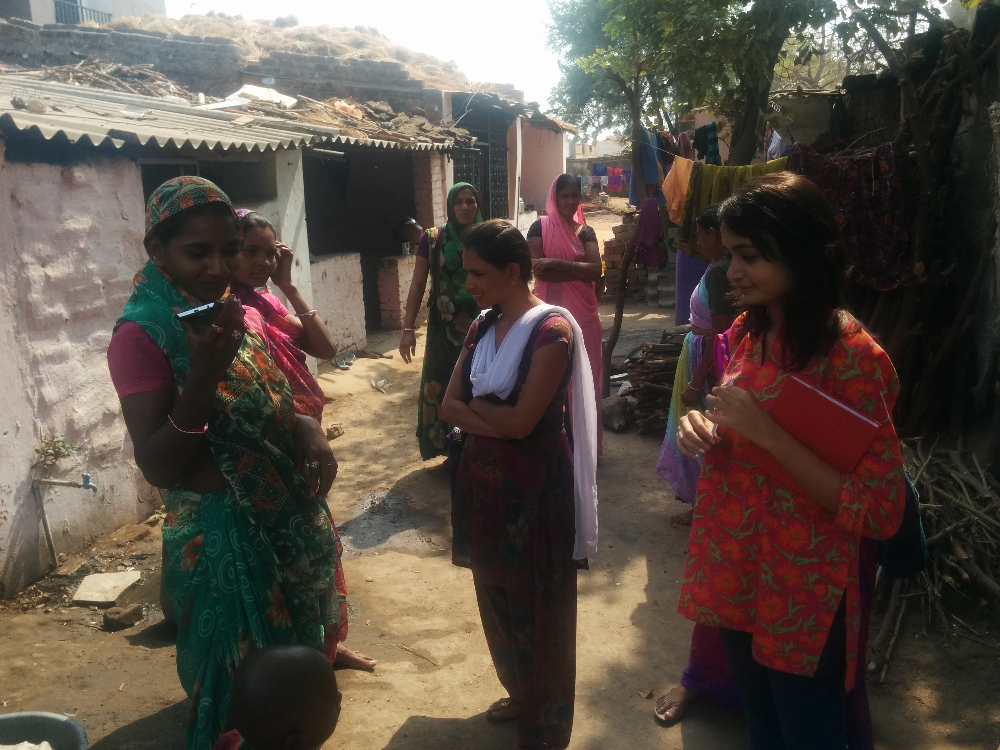
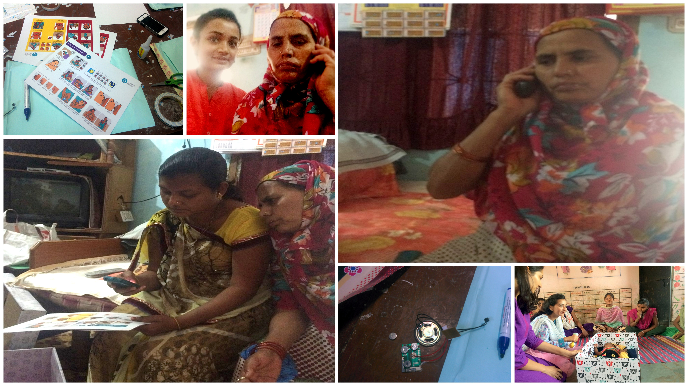
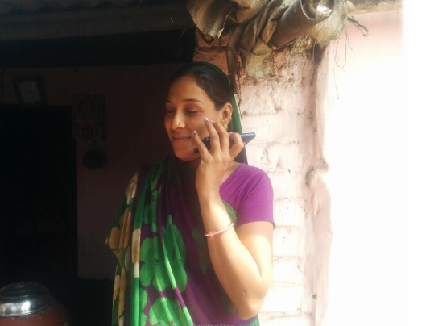

Aim
To reduce health vulnerabilities of illiterate low-income rural women by increasing their healthcare awareness.
We carried out field research in the villages in and around Ahmedabad interviewing rural women, doctors and medical staff working at local health centres. We observed and realised that problems like early marriages and young mothers along with illiteracy, carelessness and sometimes even hesitation to seek timely medical assistance were the key causes of a high mortality rate amongst these rural women and new born babies. Illiteracy was a major hurdle to their learning about healthcare information and there was a resistance to formal methods of learning due to issues related to embarrassment, orthodoxy, household responsibilities, lack of resources etc.
User Survey and Analysis
Ideation
Based on the user analysis, we concluded that any solution designed to address this challenge must have the following characteristics: (1) It must be very low cost and ideally free, (2) It must be flexible with respect to time so that they can use it at their convenience given their household responsibilities, (3) It must be enjoyable enough not to cause boredom and ensure continuity and (4) It must be able to target the right topics and also upgrade as they progress.
Proposed Solution
We designed a free Voice Assisted Mobile Service – Kahinee, A Spirited Storyteller. This was a free mobile service (we had observed that almost all of them had basic mobile phones). The women could dial in free of charge to these mobile numbers and listen to interesting stories, audio plays and local folk-lore at their convenient time. The stories and folk-lore, designed in their local language and accent, contained within them key instructions and information about important/current healthcare matters. Initially the aim was to impart awareness about maternal and child care, nutrition, anaemia and government health policies as well as facilities. The call data was collected in the cloud for analysis and potential automated learning based improvements. This could be used to decide the topics to be prioritized, the frequency and relay-times for different topics, the topics to upgrade content on etc.
After having come to this stage we learnt about the activities of Barakat Bundle, USA and seeing synergy, we approached and collaborated with them for pilot tests in the Jhagadia district at Bharuch. The pilot test feedback was very encouraging.
A future Possibility
A future extension of this idea could be to add a facility using which people in rural areas can leave an audio note describing their symptoms in their local language which can be answered using an audio note by doctors on the Kahinee network asynchronously.

Internship Experience at Awaaz.De under guidance of: Professor Tapan Parikh, Cornell Tech, USA (earlier at School of Information, UC Berkeley)
Aim
The aim was to set up a mobile network for TFI fellows and the municipal school teachers whom they closely work with to resolve their concerns and questions and thus improve their ability in imparting education to children.
User Study
Making quality primary education accessible for all, including kids from low income backgrounds is crucial for any society to evolve. In India, kids from low income families attend municipal schools where quality and attendance need attention. One of the major hurdles that teachers face while teaching in municipal schools is an unfortunate scarcity of resources and guidance. If they face a problem while interacting with a child they have nowhere to go to. Thus there is a need to provide assistive guidance to municipal school teachers.
Teach For India (TFI) is an organization dedicated to the improvement of education quality and reach for children from low-income families with a goal to work towards education equity. Their model and methodology are impressive. They recruit extremely well educated/qualified TFI fellows to commit two full-time years to teach primary kids in such under-resourced schools. This would improve education and also inspire the other municipal school teachers present there (the ripple effect).
Towards our aim, we decided to first meet some TFI fellows to understand greater details. To start with, we talked to a TFI fellow at “Shwaas” NGO. We attended a number of their sessions and observed the problems they faced while teaching. Then we talked to a number of other TFI fellows. After talking to them and also interacting with the Ahmedabad Municipal Corporation (AMC) education officer, we realized that instead of first targeting the municipal school teachers, who lack in motivation, we should begin with the TFI fellows who are a strong inspiration to the municipal school teachers. The TFI fellows are very well educated. Based on our interviews, we realized that they needed less help with general subjects and needed more assistance/guidance while handling certain psychological issues that the children faced.
A large number of children from low-income slum areas faced difficult situations at home and witnessed alcohol abuse, domestic violence and many other social evils. Thus, we decided to focus on psychological issues that these children face and try to find ways, using creative teaching methods, through which they can be educated in spite of such issues. We made two pools of students. One pool consisted of primary children who might suffer from disorders like ADHD (Attention Deficit Hyperactivity Disorder) while the other pool consisted of teenagers who might suffer from depression, peer pressure etc. Also instead of directly helping such students using an active line we thought we should start by educating teachers and parents through a passive line first. We met a leading Psychiatrist in Ahmedabad and learnt about ADHD. After this, we studied more about ADHD.
Design Solution and Iteration
We finally came up with a short and fun model script on ADHD. The script, recorded at Drishtee, an organization using communication and the arts for social development, described the symptoms to identify ADHD and teaching methods for ADHD-affected kids through a skit narrative.
For feedback we then met another TFI fellow who worked closely with kids dealing with psychological disorders. She alerted us that our script should never directly use the word “ADHD” or for that matter any disorder’s name. She said that this encouraged teachers to label the children based on their disorder and these labels did far more harm to a child’s psyche than the disorder itself. Hence we re-designed the scripts based on this extremely crucial feedback. We then conducted pilot tests using these recorded scripts for teacher’s training modules.
The teacher’s training module would give teachers a mobile based virtual counsellor cum discussion forum thus ensuring maximum reach in view of the unavailability of internet in a large number of rural areas in India.
Click here to read about our experience on the Awaaz.De blog
Image Reference: https://www.linkedin.com/company/awaaz-de

Project mentor: Professor Mehul Raval, SEAS, AU
1. Introduction
Sasaki Database consists of the carcinogenicity results obtained as a result of treating the DNA obtained from different mice organs (e.g. colon, liver, stomach, brain, bone marrow and kidney) with different chemical compounds. The specific chemical compounds have been encoded according to their groups. The important input parameters given are compound I.D., compound name, route (i.e. If the compound has been introduced orally or through intravenous routes), strain (i.e. Types of mice like ddy and winstar), number of sampling hours and the dose of that particular compound. The outputs obtained are the comet essay tail lengths observed for the different organs' DNA. The DNA is negatively charged. It is put between charged plates and the compounds are introduced on it. Depending on the carcinogenicity of the introduced compounds, the DNA shows fragmentation. These fragments being negatively charged get attracted to the positive plate and hence end up leaving behind a tail.More the fragmentation, the longer is the tail length observed. Thus, this gives us an idea of the carcinogenicity of the introduced compound.
3. Problem Statement:
The goal was to predict the missing comet essay tail length values using the tail length values already given for the different compounds and organs.
4. Solution
The compounds were encoded using their IDs. The strain and route values were encoded as well; the two kinds of routes i.e. “ip” and “op” were encoded using 0 and 1. All the five parameters i.e.Encoded compounds, strains, routes, sampling time and sampling dose were taken as input parameters. Each of the tail length value columns for the different organs were considered one at a time as an output for training the machine and predicting the missing values for that particular organ in consideration. Non linear and linear regression was used to predict the missing values. Also all input parameters were scaled down using their mean and maximum value.
5. Model:
The linear regression model used, tried to fit a line through the set of the given values and then used this best fit to predict the missing values.
Also, used a regression fit used the sigmoid function( i.e. 1/(1+x^theta) where theta is the array of all input parameters) and predicted the missing values.
The learning rate-alpha and the number of iterations were selected separately for each organ.
6. Testing
Once the values were predicted using a certain algorithm, in order to check their accuracy the set of already given values was divided in a ratio of 70/30, where 70 values were used to train the machine and predict the rest 30 values. Later these predicted 30 values were cross checked with the actual lab answers already given by Sasaki for those 30 inputs. A small sample of the results is shown below:
| Lab values | Logistic Regression Answers | Linear Model Answers |
|---|---|---|
| 25.1 | 25.139 | 24.492 |
| 25.8 | 26.196 | 22.939 |
| Lab values | Logistic Regression Answers |
|---|---|
| 15.9 | 15.434 |
| 13.9 | 15.451 |
7. Conclusion
Thus, the end goal of this project is to be able to determine the missing tail length values of different chemical compunds. this will help us identify cancerous compunds. This will also help us to decrease the usage of cancerous compunds. This project was selected amongst 6 contestants chosen globally in Professor Andrew Ng’s #LearnML contest. Click here to read about the same
Representational Image for explanation.
Source: http://www.cancerworld.org/Articles/Issues/41/March-April-2011/e-grand-round/457/Treatment-of-triple-negative-breast-cancer.html


Aim:
To enable elderly people with mobility difficulties to control lights and fans using their mobile phones and thus live with dignity and independence.
Target Users
Though the users primarily targeted for this product were the elderly, this can be used by anyone with mobility restrictions whether imposed by age or health. It can also be used for increasing comfort & convenience for people who do not have mobility limitations. The users targeted were from developing countries where cost is an important consideration.
Solution
A small hardware device, with an Atmega32 microcontroller and other necessary electrical components like inductors, relay switches etc., was proposed to be installed and wired at the switchboard. An Android application was developed to communicate with the microcontroller and the microcontroller was programmed to receive, execute and confirm instructions received from the Android Application. The instructions relating to switching on and off of lights and fans as well as increasing and decreasing of fan speeds were communicated from the Android application to the microcontroller using Bluetooth. Bluetooth, in spite of its limitations, was selected over Wi-Fi primarily to reduce cost. In India, with targeted users living in small apartments, Bluetooth range would be sufficient. Thus the user would be able to control lights and fans with a simple Android application without needing to move.

Worked (in a team of 4) with Mr. Coen, a design researcher from Holland, for his project on developing a low-cost compact washing machine that runs without electricity. The user group targeted was low-income households in India who have space as well as electricity problems. Designed a questionnaire and conducted user survey and analysis from field visits to a number of low budget households.
Image Reference: http://changeclub.nl/wp-content/uploads/2014/09/Hyperwash-01.jpg
The questionnaire that was used to conduct interviews and collect data:
 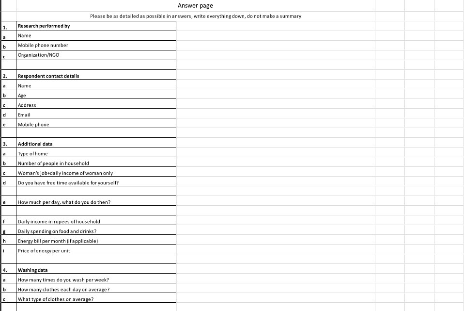
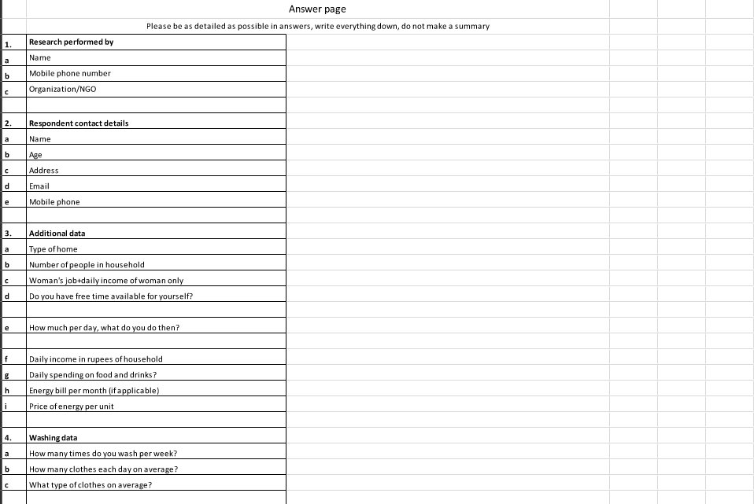
 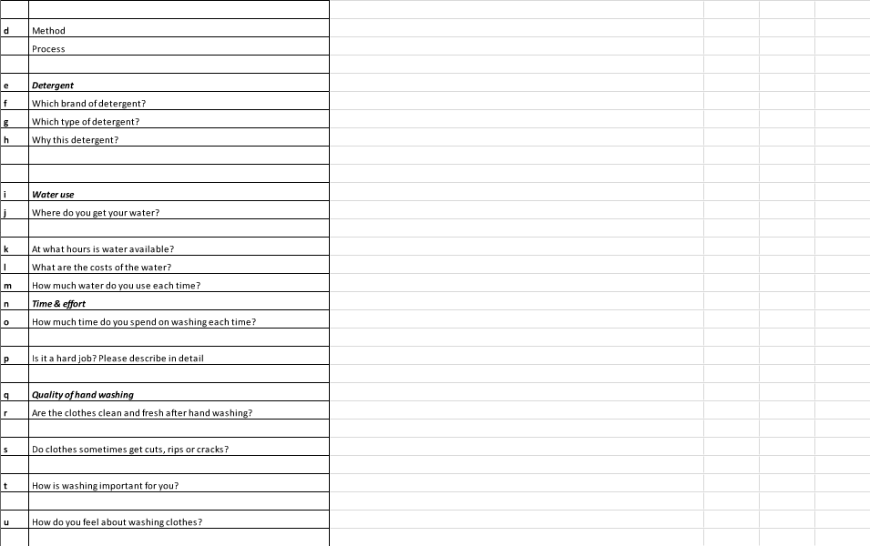
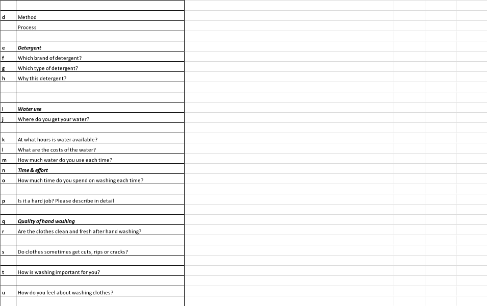

Project mentor:(Coursera Course) Professor Scott Klemmer, University of California San Diego (Coursera - Introduction to HCI)
Idea 1: Smart Drive and Smart Pick up - This application learns your daily chores like for example groceries or laundry. After which using google maps, while you are on your way to your destination ( e.g.office), it gives alerts and time estimates for all groceries or laundry places along the route. It gives you the most time efficient suggestions depending on your destination's location. It also sense traffic to be able to give suggestions. Also, it allows users to contact laundry or groceries nearby while they are stuck in traffic. One simple press of a button gives all nearby laundry/grocery places an alert. The first to respond comes and does delivery to wherever you are stuck in traffic. Thus, optimum usage of time!

Idea 2: Clean Community Roads - This application's main goal is to maintain cleaner roads for pedestrians. It allows users to form teams and click/share pictures of roads that need cleaning after which they can set "CLEAN" Challenges. They can upload and share videos of their team completing the challenge. People can then vote for the best teams using this application as well as share them on social media platforms. They can also post videos on efficient waste disposal, organic manure and such topics on the discussion forums.

Idea 3: Jetsons efficient bicycle: This bicycle converts the mechanical energy that goes into peddling to run a small AC as well as to light up the enclosed glass surface and the bicycle's headlights. The user gets to sit in an enclosed glass cabin like structure.


Name of the Product: HTours (Stands for Home-Tours, Tagline: Bringing the World to you!)
Functionality:
This is a device that easily merges with the rest of your home decor, as it has a lantern shaped exterior. This device caters to the needs of elderly who are unable to go on trips or tours because of health, finance or family reasons. It has a projector which uses any one wall of your room to show you 360 degree views or panorama images of the places you choose. It has a large menu of varied places to choose from. Also, along with the virtual tours it offers the user another option of viewing his family photos or videos on the larger screen (any one wall of the room). This service is connected with a dropbox in which the user’s children or family living separately (i.e. in many cases the children live abroad), can directly upload pictures or videos. These can directly be viewed on the wall on choosing a single option.
Unique Selling Proposition of the Device:
It is a first of its kind device which has kept the elderly in mind and so has given an easy one click access to the photos/videos uploaded. Also, they get to see these on a larger wall and hence the experience enhances. Also, the virtual panorama images of the many places help them to experience a place while sitting at home. One can choose to navigate as per their own wish and selected pace. It has 360 degree images of the places listed. The device is designed to act like a piece of room decor and thus no bulky projectors or screen spoil the decor of the room.
Representational Image
Source:https://steemit.com/travel/@diana.catherine
 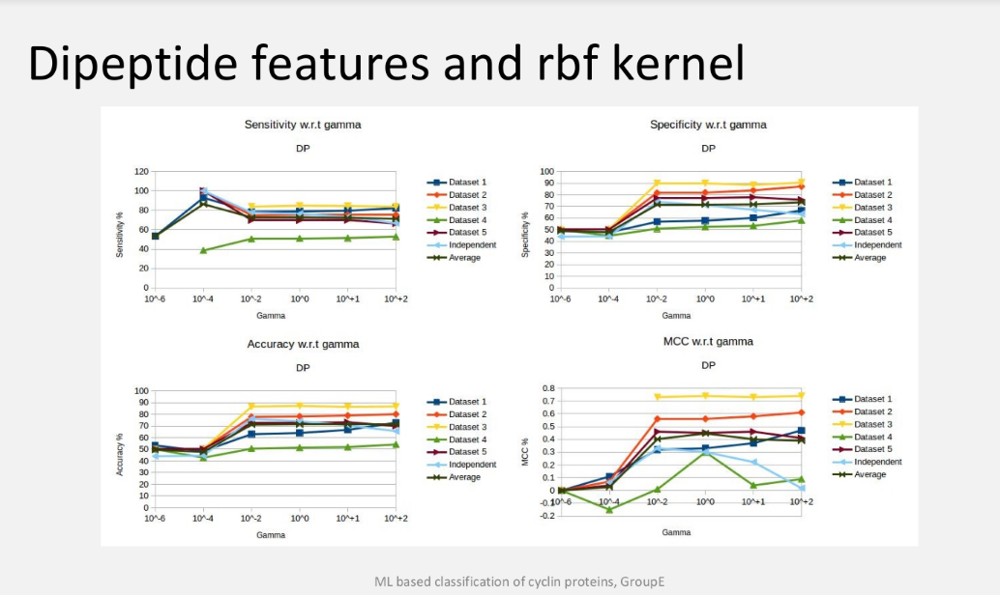
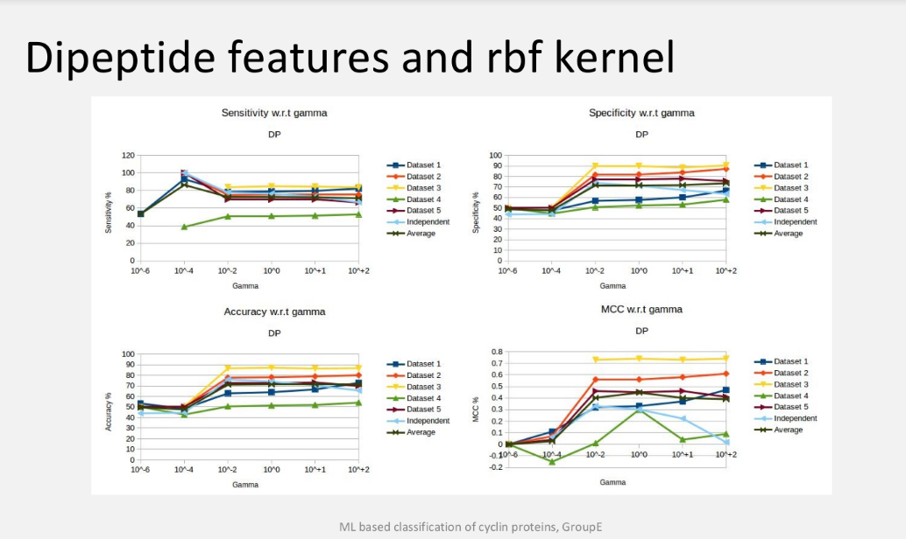
1) We identified whether a given sequence is a Cyclin protein or not using support vector machine (SVM). Cyclin proteins are a family of proteins that control the cell progression.
2) The features used for classification were Amino Acids (20 features), Dipeptide bonds (400 features), Secondary Structure Composition (SSC), Position Specific Substitution Matrix (PSSM) Composition and Hybrid composition.
3) We carried out this classification using Linear, Polynomial, RBF and sigmoidal kernels after which we compared the results obtained from the different kernels.
The first image is a representational image of Cyclin protiens
Source: http://www.cherrybiotech.com/portfolio/human-cells-temperature-control-of-cell-cycle-2